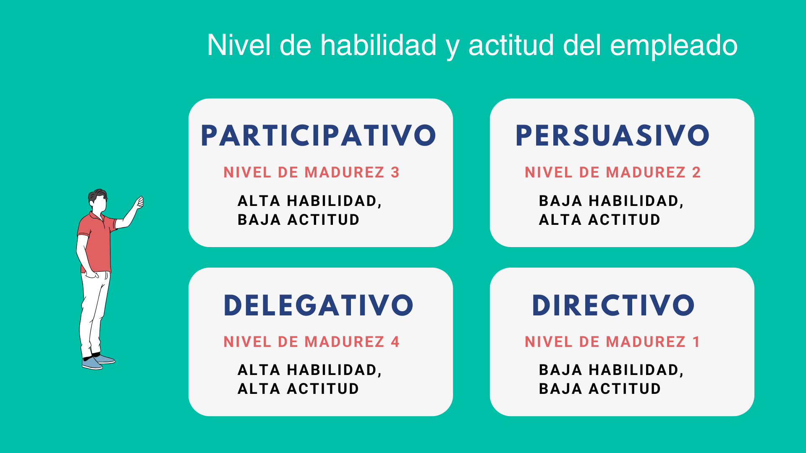
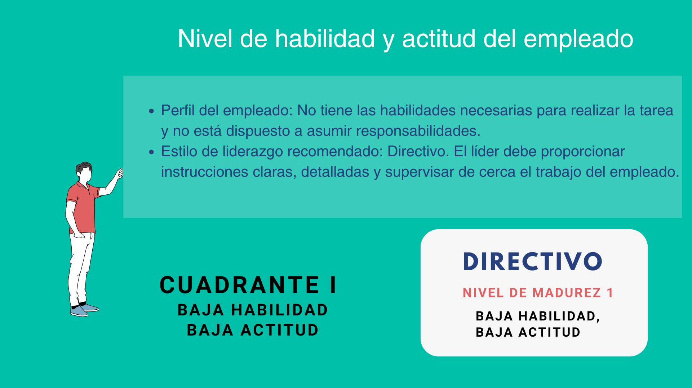
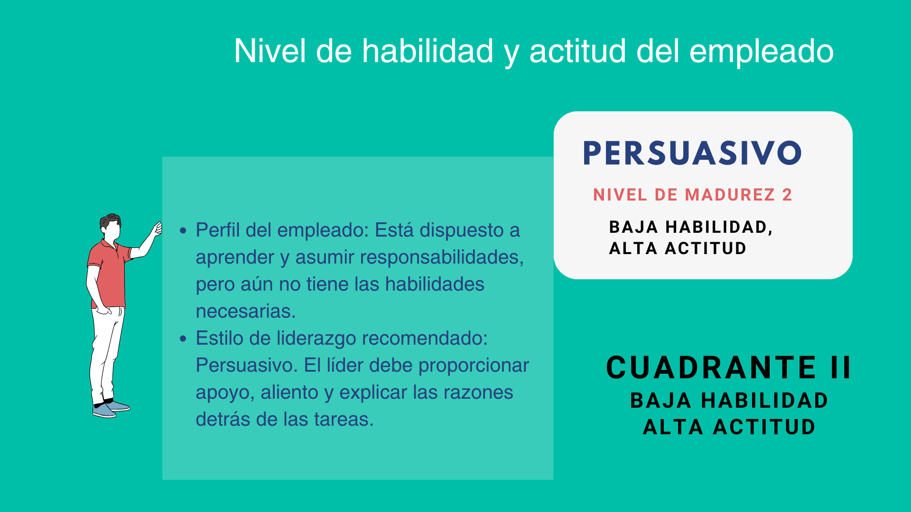
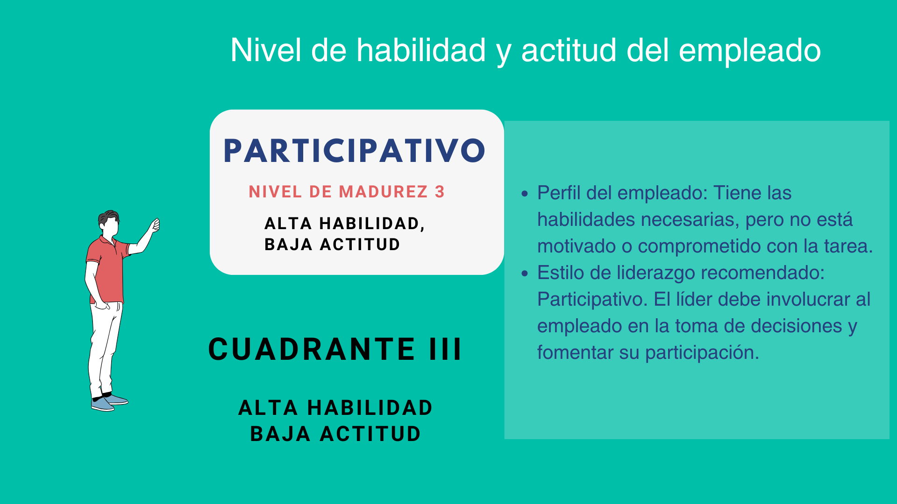
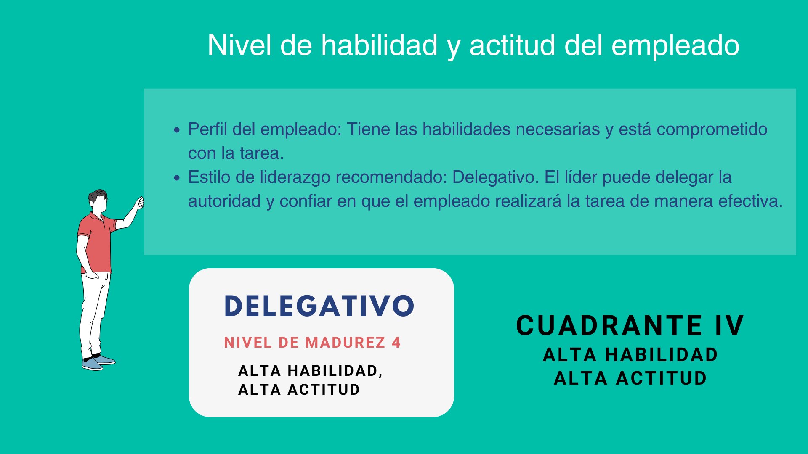

Los estilos de liderazgo que vimos se adaptan a cuatro niveles de habilidad y actitud del empleado.

Veamos cada uno en detalle
Cuadrante 1

Cuadrante 2

Cuadrante 3

Cuadrante 4

Los estilos de liderazgo que vimos se adaptan a cuatro niveles de habilidad y actitud del empleado.





Habilidad: Se refiere al conocimiento técnico, las destrezas y la experiencia que un empleado posee para realizar una tarea específica.
Actitud: Hace referencia a la disposición, el compromiso y la confianza del empleado para asumir responsabilidades y completar tareas.
Es importante destacar que tanto la habilidad como la actitud son variables que pueden cambiar con el tiempo y la experiencia. Un empleado que se encuentra en el cuadrante I hoy, puede moverse a otro cuadrante en el futuro a medida que adquiere nuevas habilidades y se vuelve más comprometido.